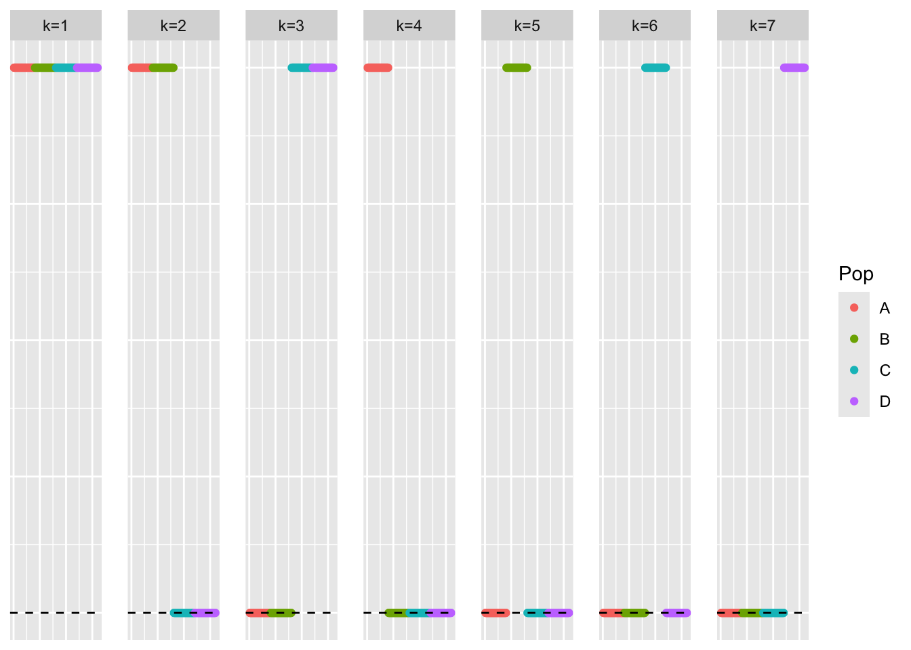
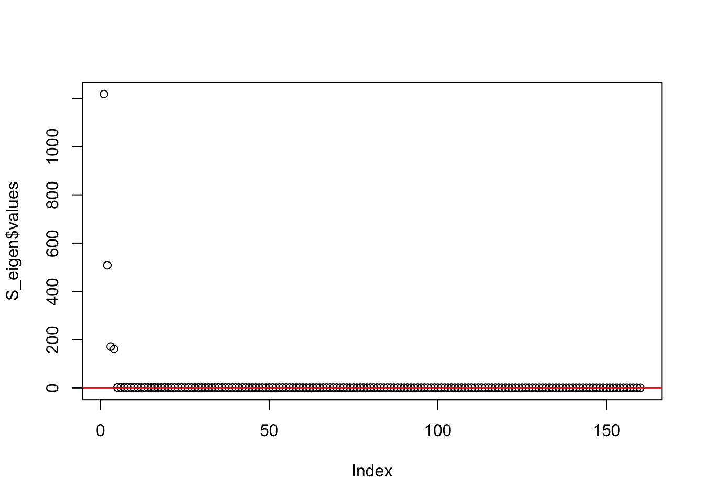
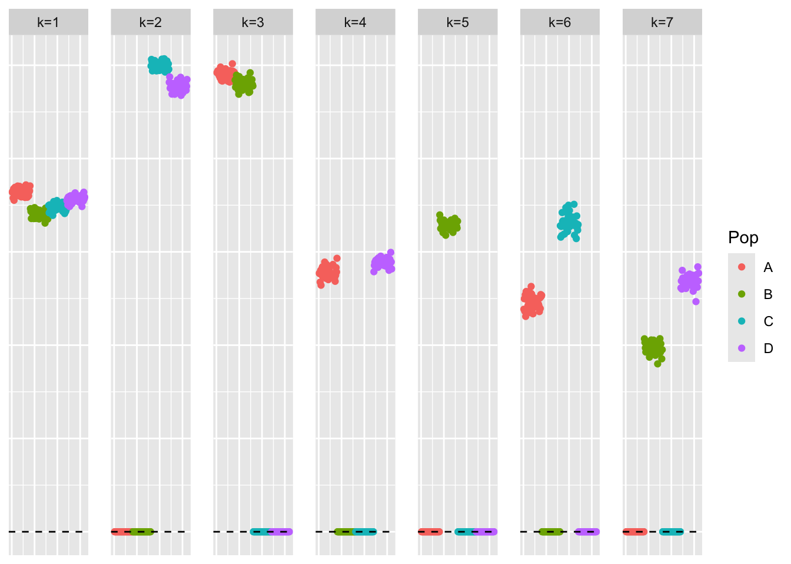
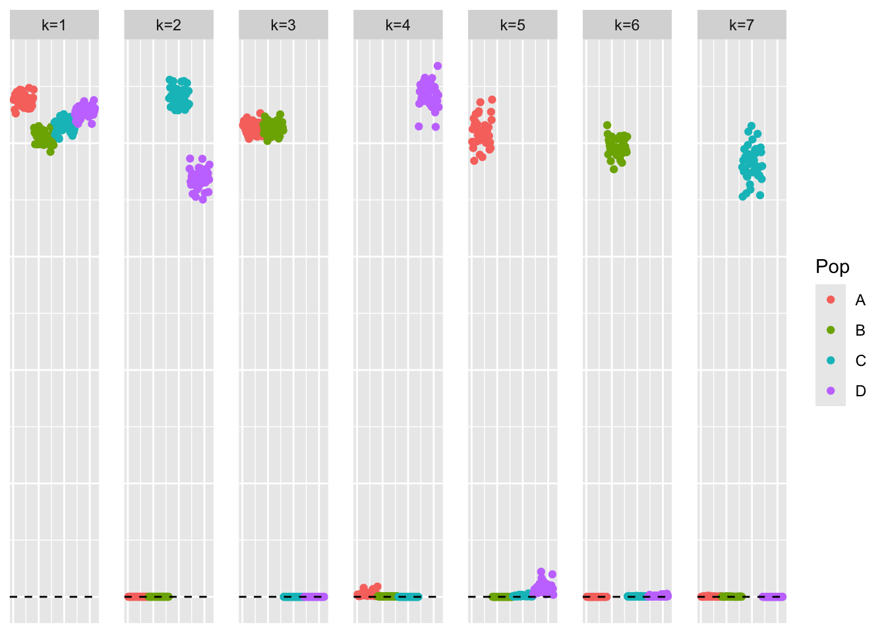
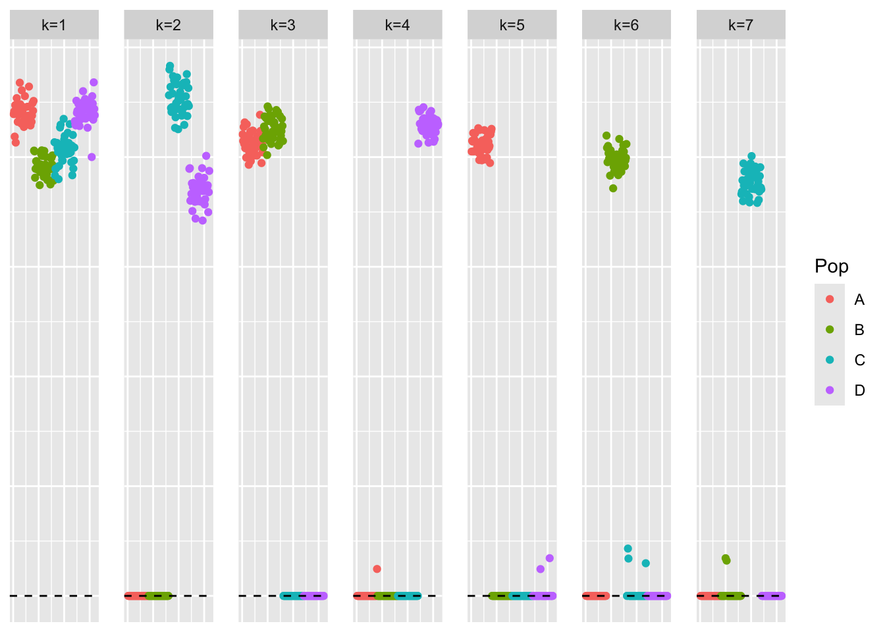
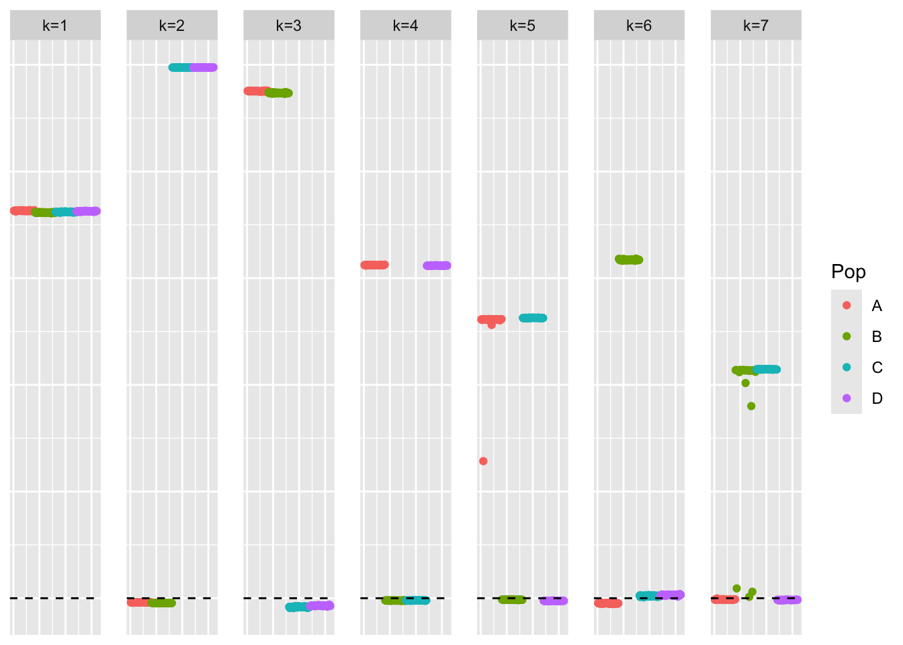
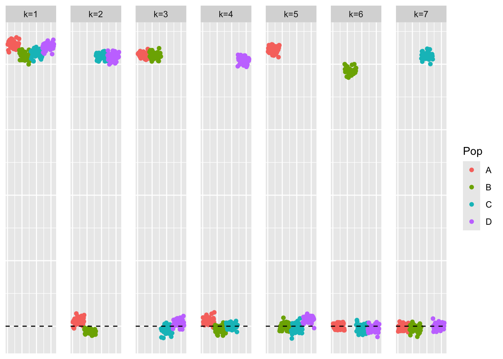

symebcovmf_gb_point_exp_backfit
Annie Xie
2025-05-07
Last updated: 2026-03-04
Checks: 7 0
Knit directory:
symmetric_covariance_decomposition/
This reproducible R Markdown analysis was created with workflowr (version 1.7.2). The Checks tab describes the reproducibility checks that were applied when the results were created. The Past versions tab lists the development history.
Great! Since the R Markdown file has been committed to the Git repository, you know the exact version of the code that produced these results.
Great job! The global environment was empty. Objects defined in the global environment can affect the analysis in your R Markdown file in unknown ways. For reproduciblity it’s best to always run the code in an empty environment.
The command set.seed(20250408) was run prior to running
the code in the R Markdown file. Setting a seed ensures that any results
that rely on randomness, e.g. subsampling or permutations, are
reproducible.
Great job! Recording the operating system, R version, and package versions is critical for reproducibility.
Nice! There were no cached chunks for this analysis, so you can be confident that you successfully produced the results during this run.
Great job! Using relative paths to the files within your workflowr project makes it easier to run your code on other machines.
Great! You are using Git for version control. Tracking code development and connecting the code version to the results is critical for reproducibility.
The results in this page were generated with repository version d6aae5a. See the Past versions tab to see a history of the changes made to the R Markdown and HTML files.
Note that you need to be careful to ensure that all relevant files for
the analysis have been committed to Git prior to generating the results
(you can use wflow_publish or
wflow_git_commit). workflowr only checks the R Markdown
file, but you know if there are other scripts or data files that it
depends on. Below is the status of the Git repository when the results
were generated:
Ignored files:
Ignored: .DS_Store
Ignored: .Rhistory
Ignored: analysis/.DS_Store
Ignored: data/.DS_Store
Note that any generated files, e.g. HTML, png, CSS, etc., are not included in this status report because it is ok for generated content to have uncommitted changes.
These are the previous versions of the repository in which changes were
made to the R Markdown
(analysis/symebcovmf_gb_point_exp_backfit.Rmd) and HTML
(docs/symebcovmf_gb_point_exp_backfit.html) files. If
you’ve configured a remote Git repository (see
?wflow_git_remote), click on the hyperlinks in the table
below to view the files as they were in that past version.
| File | Version | Author | Date | Message |
|---|---|---|---|---|
| Rmd | d6aae5a | Annie Xie | 2026-03-04 | Re-run analyses with new backfit function |
| html | 68d05ea | Annie Xie | 2025-05-12 | Build site. |
| Rmd | 58d7eb8 | Annie Xie | 2025-05-12 | Add analysis of gb backfit initialized with point exp |
Introduction
In this analysis, I want to test out initializing symEBcovMF with a binary prior with a point-exponential symEBcovMF fit.
Motivation
In the tree setting, I found that symEBcovMF with the point-exponential prior did a better job at recovering tree structure than symEBcovMF with the generalized binary prior. Matthew and I hypothesized that the point-exponential prior is better at finding sparse solutions. So we want to investigate a two-step procedure which finds a fit with point-exponential prior in the first step, and then refines the fit with the generalized binary (or other binary) prior in the second step. In this analysis, I investigate a backfitting procedure – first, I generate a fit with a point-exponential prior, and then use that as an initialization for a backfit with a binary prior.
Packages and Functions
library(ebnm)
library(pheatmap)
library(ggplot2)Warning: package 'ggplot2' was built under R version 4.5.2library(symebcovmf)source('code/visualization_functions.R')Data Generation
To test this procedure, I will apply it to the tree-structured dataset. When testing out symEBcovMF, I found that the estimates from the two priors in the tree setting had the largest difference.
sim_4pops <- function(args) {
set.seed(args$seed)
n <- sum(args$pop_sizes)
p <- args$n_genes
FF <- matrix(rnorm(7 * p, sd = rep(args$branch_sds, each = p)), ncol = 7)
# if (args$constrain_F) {
# FF_svd <- svd(FF)
# FF <- FF_svd$u
# FF <- t(t(FF) * branch_sds * sqrt(p))
# }
LL <- matrix(0, nrow = n, ncol = 7)
LL[, 1] <- 1
LL[, 2] <- rep(c(1, 1, 0, 0), times = args$pop_sizes)
LL[, 3] <- rep(c(0, 0, 1, 1), times = args$pop_sizes)
LL[, 4] <- rep(c(1, 0, 0, 0), times = args$pop_sizes)
LL[, 5] <- rep(c(0, 1, 0, 0), times = args$pop_sizes)
LL[, 6] <- rep(c(0, 0, 1, 0), times = args$pop_sizes)
LL[, 7] <- rep(c(0, 0, 0, 1), times = args$pop_sizes)
E <- matrix(rnorm(n * p, sd = args$indiv_sd), nrow = n)
Y <- LL %*% t(FF) + E
YYt <- (1/p)*tcrossprod(Y)
return(list(Y = Y, YYt = YYt, LL = LL, FF = FF, K = ncol(LL)))
}sim_args = list(pop_sizes = rep(40, 4), n_genes = 1000, branch_sds = rep(2,7), indiv_sd = 1, seed = 1)
sim_data <- sim_4pops(sim_args)This is a heatmap of the scaled Gram matrix:
plot_heatmap(sim_data$YYt, colors_range = c('blue','gray96','red'), brks = seq(-max(abs(sim_data$YYt)), max(abs(sim_data$YYt)), length.out = 50))
This is a scatter plot of the true loadings matrix:
pop_vec <- c(rep('A', 40), rep('B', 40), rep('C', 40), rep('D', 40))
plot_loadings(sim_data$LL, pop_vec)
This is a plot of the eigenvalues of the Gram matrix:
S_eigen <- eigen(sim_data$YYt)
plot(S_eigen$values) + abline(a = 0, b = 0, col = 'red')
integer(0)This is the minimum eigenvalue:
min(S_eigen$values)[1] 0.3724341Generalized binary
Generalized binary symEBcovMF
For comparison, we first try running greedy symEBcovMF with generalized binary prior.
symebcovmf_fit <- sym_ebcovmf_fit(S = sim_data$YYt, ebnm_fn = ebnm::ebnm_generalized_binary, K = 7, maxiter = 500, rank_one_tol = 10^(-8), tol = 10^(-8), refit_lam = TRUE)[1] "Adding factor 1"
[1] "Adding factor 2"
[1] "Update to factor 2 decreased elbo by 0.185693113577145"
[1] "Adding factor 3"
[1] "Adding factor 4"
[1] "Adding factor 5"
[1] "Update to factor 5 decreased elbo by 0.0114876429433934"
[1] "Adding factor 6"
[1] "Adding factor 7"
[1] "Update to factor 7 decreased elbo by 1.52795109897852e-10"This is a scatter plot of \(\hat{L}\), the estimate from symEBcovMF:
bal_pops <- c(rep('A', 40), rep('B', 40), rep('C', 40), rep('D', 40))
plot_loadings(symebcovmf_fit$L_pm %*% diag(sqrt(symebcovmf_fit$lambda)), bal_pops)
| Version | Author | Date |
|---|---|---|
| 68d05ea | Annie Xie | 2025-05-12 |
This is the objective function value attained:
symebcovmf_fit$elbo[1] -14979.17Generalized binary symEBcovMF backfit initialized with point-exponential fit
For this procedure, I start by running symEBcovMF with a point-exponential prior with Kmax set to the inputted Kmax value. From this, I get an estimate for \(L\), which I call \(\hat{L}_{exp}\). Then, I backfit with a generalized-binary prior.
symebcovmf_pexp_fit <- sym_ebcovmf_fit(S = sim_data$YYt, ebnm_fn = ebnm::ebnm_point_exponential, K = 7, maxiter = 500, rank_one_tol = 10^(-8), tol = 10^(-8), refit_lam = TRUE)[1] "Adding factor 1"
[1] "Adding factor 2"
[1] "Adding factor 3"
[1] "Adding factor 4"
[1] "Adding factor 5"
[1] "Adding factor 6"
[1] "Adding factor 7"This is a scatter plot of \(\hat{L}_{exp}\), the estimate from point-exponential symEBcovMF. This is the initialization for the backfit:
bal_pops <- c(rep('A', 40), rep('B', 40), rep('C', 40), rep('D', 40))
plot_loadings(symebcovmf_pexp_fit$L_pm %*% diag(sqrt(symebcovmf_pexp_fit$lambda)), bal_pops)
Now, we run the backfit.
symebcovmf_pexp_fit_init <- symebcovmf_pexp_fit
symebcovmf_pexp_fit_init$fitted_gs <- rep(list(NULL), length(symebcovmf_pexp_fit$lambda))
symebcovmf_gb_fit_backfit <- sym_ebcovmf_backfit(sim_data$YYt, symebcovmf_pexp_fit_init, ebnm_fn = ebnm_generalized_binary, backfit_maxiter = 100)This is a scatter plot of \(\hat{L}_{gb-backfit}\), the estimate from the generalized binary backfit:
bal_pops <- c(rep('A', 40), rep('B', 40), rep('C', 40), rep('D', 40))
plot_loadings(symebcovmf_gb_fit_backfit$L_pm %*% diag(sqrt(symebcovmf_gb_fit_backfit$lambda)), bal_pops)
This is the objective function value attained:
symebcovmf_gb_fit_backfit$elbo[1] 9112.232Observations
The estimate from the backfit procedure looks closer to the tree-structured loadings matrix than the estimate from greedy generalized binary symEBcovMF. Furthermore, the backfit procedure attains a much higher objective function value. This suggests that the method does prefer the tree-structured loadings matrix, and the greedy generalized binary symEBcovMF method has a convergence issue. The second factor corresponding to a subtype effect could be more binary. This could potentially be fixed by using a more strict binary prior. Similarly, the first factor corresponding to the intercept could be more binary. Another observation is the single group effect factors all have a couple of small, non-zero loading values. I’m not exactly sure why those appear.
Binormal
In this section, I try applying the same method with the binormal prior instead of the generalized binary prior.
dbinormal = function (x,s,s0,lambda,log=TRUE){
pi0 = 0.5
pi1 = 0.5
s2 = s^2
s02 = s0^2
l0 = dnorm(x,0,sqrt(lambda^2 * s02 + s2),log=TRUE)
l1 = dnorm(x,lambda,sqrt(lambda^2 * s02 + s2),log=TRUE)
logsum = log(pi0*exp(l0) + pi1*exp(l1))
m = pmax(l0,l1)
logsum = m + log(pi0*exp(l0-m) + pi1*exp(l1-m))
if (log) return(sum(logsum))
else return(exp(sum(logsum)))
}ebnm_binormal = function(x,s, g_init = NULL, fix_g = FALSE, output = ebnm_output_default(), control = NULL){
# Add g_init to make the method run
if(is.null(dim(x)) == FALSE){
x <- c(x)
}
s0 = 0.01
lambda = optimize(function(lambda){-dbinormal(x,s,s0,lambda,log=TRUE)},
lower = 0, upper = max(x))$minimum
g = ashr::normalmix(pi=c(0.5,0.5), mean=c(0,lambda), sd=c(lambda * s0,lambda * s0))
postmean = ashr::postmean(g,ashr::set_data(x,s))
postsd = ashr::postsd(g,ashr::set_data(x,s))
log_likelihood <- ashr::calc_loglik(g, ashr::set_data(x,s))
return(list(fitted_g = g, posterior = data.frame(mean=postmean,sd=postsd), log_likelihood = log_likelihood))
}Binormal symEBcovMF
For comparison, I try running regular symEBcovMF with the binormal prior.
symebcovmf_binormal_fit <- sym_ebcovmf_fit(S = sim_data$YYt, ebnm_fn = ebnm_binormal, K = 7, maxiter = 500, rank_one_tol = 10^(-8), tol = 10^(-8), refit_lam = TRUE)[1] "Adding factor 1"
[1] "Adding factor 2"
[1] "Adding factor 3"
[1] "Adding factor 4"
[1] "Adding factor 5"
[1] "Adding factor 6"
[1] "Adding factor 7"
[1] "Update to factor 7 decreased elbo by 15.6794903675454"This is a scatter plot of \(\hat{L}_{binormal}\), the estimate from binormal symEBcovMF:
bal_pops <- c(rep('A', 40), rep('B', 40), rep('C', 40), rep('D', 40))
plot_loadings(symebcovmf_binormal_fit$L_pm %*% diag(sqrt(symebcovmf_binormal_fit$lambda)), bal_pops)
This is the objective function value attained:
symebcovmf_binormal_fit$elbo[1] -14313.79Binormal symEBcovMF backfit with point-exponential initialization
Now we try the backfit procedure with the binormal prior.
symebcovmf_binormal_fit_backfit <- sym_ebcovmf_backfit(sim_data$YYt, symebcovmf_pexp_fit_init, ebnm_fn = ebnm_binormal, backfit_maxiter = 100)This is a scatter plot of \(\hat{L}_{binormal-backfit}\), the estimate from binormal backfit:
bal_pops <- c(rep('A', 40), rep('B', 40), rep('C', 40), rep('D', 40))
plot_loadings(symebcovmf_binormal_fit_backfit$L_pm %*% diag(sqrt(symebcovmf_binormal_fit_backfit$lambda)), bal_pops)
This is the objective function attained:
symebcovmf_binormal_fit_backfit$elbo[1] 9761.552Observations
Similar to generalized binary symEBcovMF, the binormal symEBcovMF method fails to find all four single group effect factors. Instead, three of the factors combine two groups. The backfit procedure does a better job at recovering the tree structure in the data. Furthermore, the estimate from the backfit procedure attains a higher objective function value than the estimate from the greedy procedure. Comparing the binormal prior with the generalized binary prior, we see that the factors generated from the latter look more binary. Though this could be due to the settings of the priors. I’m guessing it would be possible to get a more binary estimate from the generalized binary prior by changing the scale parameter.
sessionInfo()R version 4.5.1 (2025-06-13)
Platform: aarch64-apple-darwin20
Running under: macOS Tahoe 26.3
Matrix products: default
BLAS: /Library/Frameworks/R.framework/Versions/4.5-arm64/Resources/lib/libRblas.0.dylib
LAPACK: /Library/Frameworks/R.framework/Versions/4.5-arm64/Resources/lib/libRlapack.dylib; LAPACK version 3.12.1
locale:
[1] en_US.UTF-8/en_US.UTF-8/en_US.UTF-8/C/en_US.UTF-8/en_US.UTF-8
time zone: America/Chicago
tzcode source: internal
attached base packages:
[1] stats graphics grDevices utils datasets methods base
other attached packages:
[1] symebcovmf_0.0.0.9000 ggplot2_4.0.1 pheatmap_1.0.13
[4] ebnm_1.1-42 workflowr_1.7.2
loaded via a namespace (and not attached):
[1] sass_0.4.10 generics_0.1.4 ashr_2.2-67 stringi_1.8.7
[5] lattice_0.22-7 digest_0.6.39 magrittr_2.0.4 RColorBrewer_1.1-3
[9] evaluate_1.0.5 grid_4.5.1 fastmap_1.2.0 rprojroot_2.1.1
[13] jsonlite_2.0.0 Matrix_1.7-4 processx_3.8.6 RSpectra_0.16-2
[17] whisker_0.4.1 ps_1.9.1 mixsqp_0.3-54 promises_1.5.0
[21] httr_1.4.7 scales_1.4.0 truncnorm_1.0-9 invgamma_1.2
[25] jquerylib_0.1.4 cli_3.6.5 rlang_1.1.6 deconvolveR_1.2-1
[29] splines_4.5.1 withr_3.0.2 cachem_1.1.0 yaml_2.3.12
[33] otel_0.2.0 tools_4.5.1 SQUAREM_2021.1 dplyr_1.1.4
[37] httpuv_1.6.16 vctrs_0.6.5 R6_2.6.1 lifecycle_1.0.4
[41] git2r_0.36.2 stringr_1.6.0 fs_1.6.6 trust_0.1-8
[45] irlba_2.3.5.1 pkgconfig_2.0.3 callr_3.7.6 gtable_0.3.6
[49] pillar_1.11.1 bslib_0.9.0 later_1.4.4 glue_1.8.0
[53] Rcpp_1.1.0 xfun_0.54 tibble_3.3.0 tidyselect_1.2.1
[57] rstudioapi_0.17.1 knitr_1.50 farver_2.1.2 htmltools_0.5.9
[61] labeling_0.4.3 rmarkdown_2.30 compiler_4.5.1 S7_0.2.1
[65] getPass_0.2-4